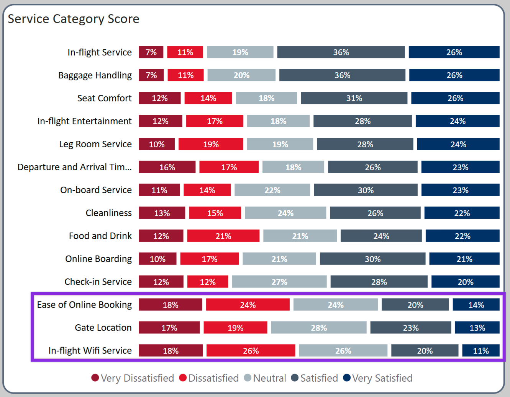
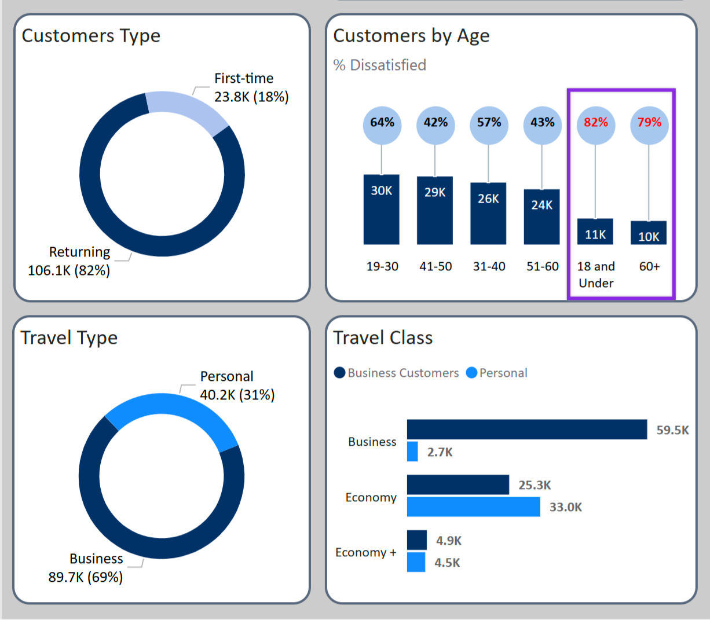

Passenger Satisfaction Analysis
A Power BI dashboard analyzing airline satisfaction surveys to identify key drivers of passenger experience.
Objective
To analyze passenger survey data to uncover the top pain points and strengths in the airline's service, providing actionable recommendations for improvement.
Tools Used
Power BI
DAX
Data Source
Related Industries
Customer Service
Travel & Tourism
Hospitality
The Live Dashboard
Supporting Visualizations


About This Project
Objectives:
- Identify factors influencing passenger satisfaction.
- Analyze trends in traveler demographics and preferences.
- Develop actionable recommendations to improve customer experience.
Data Sources
Primary Dataset:
- Survey Data: Includes passenger feedback on various aspects of the travel experience.
- Key Variables: Ticket class, customer demographics, travel purpose (business vs. personal), first-time vs. returning travelers.
Process
Tools & Technologies:
- Power BI for visualization and dashboard creation.
- Power Query for data transformation, including: Standardizing data formats, Pivoting columns for better aggregation, Creating new calculated columns.
Data Analysis Techniques:
- Likert Scale Chart: Used to visualize satisfaction levels across different service categories.
- Comparative Analysis: Examining differences between business vs. personal travelers, and first-time vs. returning passengers.
Key Findings
Top Drivers of Satisfaction:
- In-flight service
- Baggage handling
- Seat comfort
Top Passenger Complaints:
- In-flight Wi-Fi service
- Gate location convenience
- Ease of online booking
Demographic Insights:
- Business travelers make up 70% of all passengers.
- First-time travelers report 70% dissatisfaction, indicating a need for a smoother onboarding experience.
Recommendations
- Improve Online Booking Experience: Redesign the booking app and website for better usability based on customer feedback. Conduct usability testing to ensure a seamless and intuitive booking process.
- Enhance Airport Navigation: Integrate a real-time airport navigation feature in the airline’s mobile app. Use GPS and indoor mapping technology to provide step-by-step gate directions.
- Upgrade In-Flight Wi-Fi: Partner with leading Wi-Fi providers to enhance network reliability. Introduce tiered pricing models, offering free basic messaging and paid options for streaming. Implement real-time diagnostics to monitor and quickly resolve connectivity issues.
- Identify and Address Causes of Travel Delays: Conduct an in-depth analysis of historical flight delay data to identify common causes. Improve real-time communication with passengers through app notifications about delay reasons and expected resolutions.
Next Steps & Action Plan
- Conduct A/B testing on the new booking system for usability improvements.
- Monitor Wi-Fi system performance and gather feedback on the proposed tiered pricing model.
Get In Touch
Whether you have a question or just want to say hi, I’ll try my best to get back to you!